一般树允许一个结点有任意多个孩子。本章用「左孩子、右兄弟」表示它：child 指向第一个孩子，sibling 指向下一个兄弟。并查集则回答另一类问题：若干元素分属哪些互不相交的集合。
#6.1 树的定义和基本术语
树形结构用分支关系定义层次：一个结点至多一个前驱，但可以有任意多个后继。家谱、机关编制、文件系统目录、编译器的句法树，都是树。和第 5 章的二叉树不同，一般树的结点不限制孩子个数。
#6.1.1 树和森林
树是 n（n≥1）个结点的有穷集合 T，满足：有且仅有一个称为根的结点；其余结点被分成 m（m≥0）个互不相交的集合，每个集合又是一棵树，叫做根的子树。这个定义是递归的。
也可以用二元关系来写。结点集 K 上有一个关系 r：恰好一个结点没有前驱，它是根；其余每个结点恰好一个前驱；从根到任意结点都存在一条由关系元组串起来的路径。
父、子、兄弟、根、叶、度、层、路径这些词，含义与二叉树相同。结点的度是孩子个数，树的度是各结点度的最大值。根在第 0 层，非根结点的层数是父结点层数加 1。
自然界里孩子的左右次序往往无所谓，这种树叫无序树。计算机存储是有序的，所以实现时通常把孩子从左到右编上号，当作有序树。注意：度为 2 的有序树还不是二叉树——删掉第一个孩子后，第二个会顶上来占第一的位置；二叉树必须能表示「左空、右不空」这种左右不对称。
森林是零棵或多棵互不相交的树的集合（通常有序）。一棵树里，某个结点的全部子树组成一个森林；给这个森林加上一个公共根，就又变成一棵树。
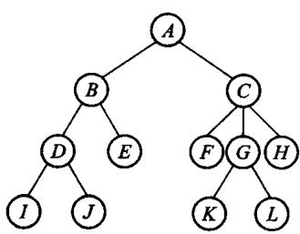
图 6.1 一般树的树形表示。
树有多种画法。树形表示法是根在上的倒挂树；凹入表示法用长短线表示层次，像书的目录；文氏图用嵌套圆；嵌套括号把根写在左边、子树写在括号里，例如 A(B(D(I,J),E), C(F,G(K,L),H))。表示法多样，说明树在建模里用得广。
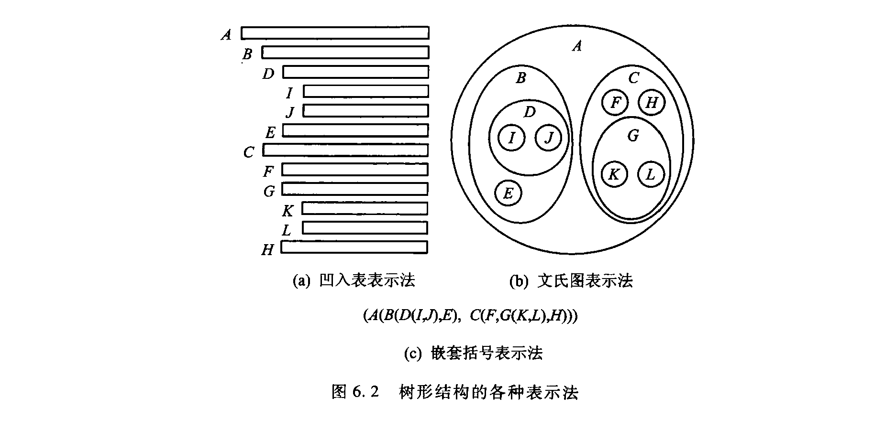
图 6.2 同一棵树的三种等价表示。凹入表适合按层次阅读，文氏图突出包含关系，嵌套括号则便于作为文本编码或输入。
例如 A 的孩子是 B、C、D，B 的孩子是 E、F。用左孩子 / 右兄弟画出来：
A
└─ child → B ── sibling → C ── sibling → D
└─ child → E ── sibling → F任意度的树只需两个指针域。代价是不能 O(1) 取得「第 k 个孩子」，必须沿兄弟链走过去。
#6.1.2 森林与二叉树的等价转换
树和森林都可以一对一地变成二叉树，相关操作也就都能转到二叉树上做。形象的做法是「连线、切线、旋转」三步：
- 连线：把兄弟结点用线连起来。
- 切线：只保留父结点到第一个孩子的连线，砍掉到其余孩子的连线。
- 旋转：以根为轴顺时针转一下，画面才像通常的二叉树。
转换后，一个结点的左孩子是它在原树（或森林）里的第一个孩子，右孩子是原来的下一个兄弟。左枝上是父子关系，右枝上是兄弟关系。单棵树的根没有兄弟，所以转成二叉树后根的右孩子一定为空。
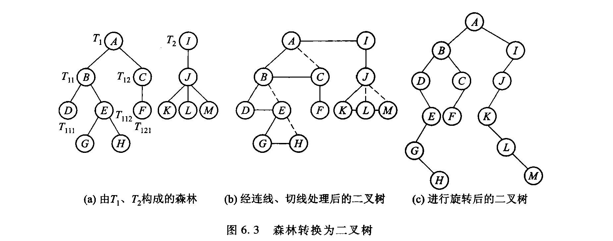
图 6.3 森林转换为二叉树的过程：先把兄弟连线，再切去多余的父子线，最后旋转整理方向。
形式地说：森林 F={T1,T2,…,Tn} 转成二叉树 B(F)——F 空则 B(F) 空；否则 B(F) 的根是 T1 的根，B(F) 的左子树是 T1 的子树森林转成的二叉树，B(F) 的右子树是 {T2,…,Tn} 转成的二叉树。
反过来是三步的逆：逆时针旋转；若 x 是 y 的左孩子，就把 x 以及 x 右侧整条右链上的结点都补连到 y；再删掉所有到右孩子的边。二叉树 B 对应的森林 F(B)：空树对应空森林；否则 F(B) 是一棵以 B 的根为根、以 F(BL) 为子树森林的树，再加上 F(BR)。这两种转换互逆。
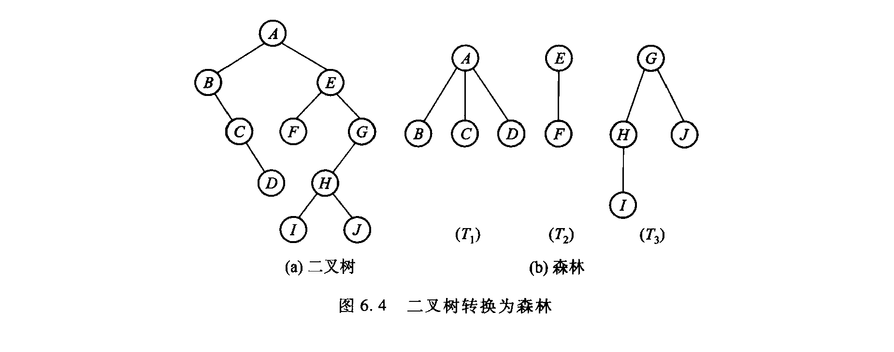
图 6.4 上述转换的逆过程，完整保留二叉树和对应森林的全部子图。
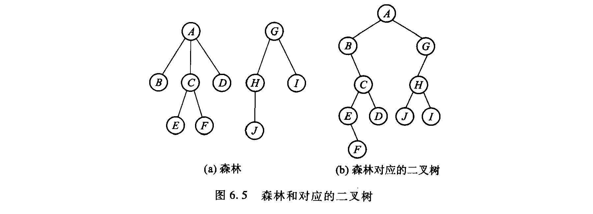
图 6.5 森林与对应二叉树的互相转换，完整保留原书的森林、二叉树和题注。
#6.1.3 树的抽象数据类型
和二叉树一样，树的 ADT 分结点类和树类。结点保存自身值，以及指向最左孩子、下一个兄弟和父结点的链接；树类保存根（森林时根还可以沿兄弟链相连）。对外运算包括：用一个值建立根；在某结点下插入第一个孩子；在某结点旁插入下一个兄弟；查询父结点；删除一棵子树；以及先根、后根、层次三种周游。插入和删除必须同时维护父链、孩子链和兄弟链，不能只改其中一条。原书【代码6.1】【代码6.2】只给出声明，本书把这些运算直接写在 GeneralTree 上，不再另设空基类。
#6.1.4 树的周游
先根：先访问结点，再依次周游各孩子子树。后根：先周游各孩子子树，再访问结点。层次：按离根的距离一层一层走，需要队列。对本节的例子：
| 周游 | 顺序 | 本例 |
|---|---|---|
| 先根 | 结点，再孩子子树 | A B E F C D |
| 后根 | 孩子子树，再结点 | E F B C D A |
| 层次 | 按离根的距离 | A B C D E F |
递归周游和递归销毁在极深的退化树上会耗尽调用栈，和第 5 章是同一类风险。
#6.2 树的链式存储结构
一般树的存储比二叉树麻烦，因为度不固定。常见有四种想法，本章主实现是第四种。
#6.2.1 “子结点表”表示方法
“子结点表”表示法让每个结点保存一张按从左到右排列的孩子指针表，表项还可以带有指向下一个孩子的链接；结点本身另存值和父结点链接。最左孩子由表头直接得到，沿表即可找到其余孩子。取第 k 个孩子若表用数组可为 O(1)，若用链表则要沿表走 k 步。
这种表示法的代价是：度不固定时数组表需要扩容，孩子序列中间插入还要搬动后面的指针；空间上，度为 d 的结点要留 d 个指针槽，孩子很少时会浪费。本章随后用“左子/右兄”把每个结点的链接数固定为两个。
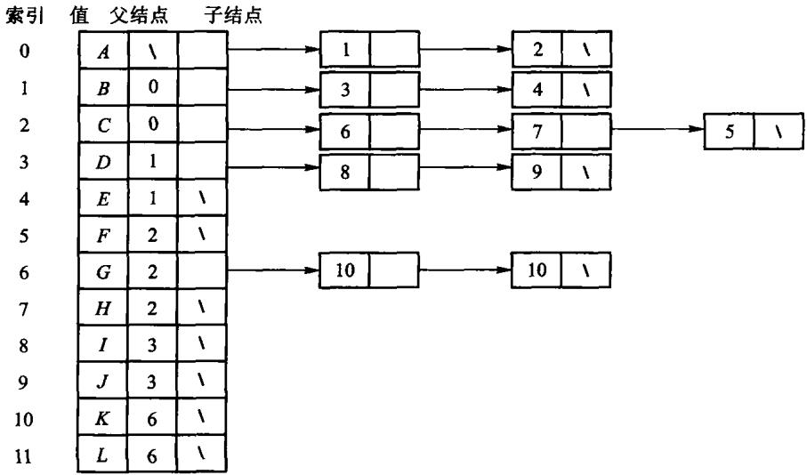
图 6.6 每个结点单独保存孩子表的表示法。
#6.2.2 静态“左子/右兄”表示法
下面介绍“子结点表”表示法的一个改进：静态“左子/右兄”（也称“左子结点/右兄弟结点”，left child/right sibling）表示法。它把每个结点的孩子表改成两个链接域，使访问结点的右侧兄弟结点更加方便。
图 6.7 是一个静态“左子/右兄”实例，结点仍然存放在数组中，数组下标代替指针。每个结点元素包括四个域：结点的值、指向父结点的链接、指向最左子结点的链接，以及指向右侧兄弟结点的链接。因此每个结点的存储空间大小固定；与“子结点表”相比，链接关系更直接，空间效率也更高。
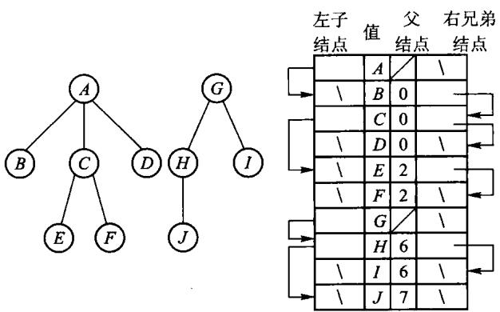
图 6.7 左孩子—右兄弟表示法把任意度的树压成两个链接域。
如果两棵树存储在同一个数组中，把其中一棵树添加为另一棵树的子树就很简单。把图 6.7 中以 A 为根的树变成 H 的最左子树，合并结果如图 6.8 所示。结点数组中只需调整 3 个链接：将 H 的最左子结点指向 A，将 A 的父结点指向 H，再将 A 的右侧兄弟指向 J。其余结点的值和链接都不变。
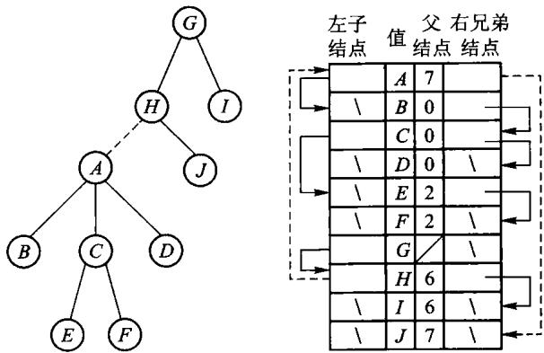
图 6.8 静态数组中的左子、右兄链接和树的归并。
#6.2.3 动态表示法
树的结点数和各结点的孩子数都可能随时变化。若预先限定树的最大度数，就可以给每个结点分配固定数量的指针，但度数较小时会浪费空间，超过上限时又必须改动整个表示法，插入新孩子也不灵活。
另一种办法是为每个结点动态分配空间，并在结点中保存一张可变长度的孩子指针表（必要时还可保存孩子数）。孩子增加或删除时，只需调整这一结点的表。这种表示法本质上仍是“子结点表”，区别在于结点不再集中放在一个数组中，而是逐个从堆上分配；因此树的大小事先未知、会频繁长出新结点时更合适。图 6.9(a) 是树形结构，图 6.9(b) 展开了每个结点的动态孩子表。
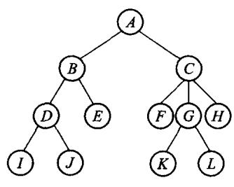
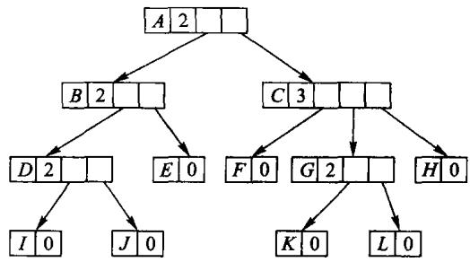
图 6.9 树的动态表示法。
#6.2.4 动态“左子/右兄”二叉链表表示法
这是本章的主实现。任意度的树只需两个指针域：child 指向第一个孩子，sibling 指向下一个兄弟。再加一个 parent 便于向上走。代价是取第 k 个孩子必须沿兄弟链走 k 步。
#include "modern.hpp"
#include <iostream>
int main() {
dsa::GeneralTree<char> tree;
tree.create_root('A');
auto* b = tree.insert_first(tree.root(), 'B');
auto* c = tree.insert_next(b, 'C');
tree.insert_next(c, 'D');
tree.insert_first(b, 'E');
tree.insert_next(tree.root()->child->child, 'F');
std::cout << "先根: ";
tree.preorder([](char value) { std::cout << value; });
std::cout << "\n后根: ";
tree.postorder([](char value) { std::cout << value; });
std::cout << "\n层次: ";
tree.breadth_first([](char value) { std::cout << value; });
std::cout << '\n';
dsa::DisjointSet sets(5);
sets.unite(0, 1);
sets.unite(1, 2);
sets.unite(3, 4);
std::cout << "0 与 2 同集合: " << (sets.same(0, 2) ? "是" : "否") << '\n';
std::cout << "0 与 3 同集合: " << (sets.same(0, 3) ? "是" : "否") << '\n';
}在仓库根目录运行：
c++ -std=c++17 -Wall -Wextra -Werror -Icode/ch06/general_tree \
code/ch06/general_tree/demo.cpp -o /tmp/tree-demo
/tmp/tree-demo输出是：
先根: ABEFCD
后根: EFBCDA
层次: ABCDEF
0 与 2 同集合: 是
0 与 3 同集合: 否insert_first(parent, value) 把新结点插到孩子链的最前面；insert_next(node, value) 插到该结点的下一个兄弟。先插入 B，再 insert_next(B, C)、insert_next(C, D)，孩子从左到右就是 B、C、D。
create_root 清空旧树并新建根。insert_first 先让新结点的 sibling 指向原来的第一个孩子，再把它接到 parent->child 上——所以后插入的孩子会出现在兄弟链前端。delete_subtree 沿着父的孩子链或森林的根兄弟链找到指向它的指针，改写成下一个兄弟，再递归销毁。
孩子-兄弟树：
template <typename T>
class GeneralTree {
public:
struct Node {
T value;
Node* child{nullptr};
Node* sibling{nullptr};
Node* parent{nullptr};
explicit Node(const T& value) : value(value) {}
};
GeneralTree() = default;
GeneralTree(const GeneralTree& other) : root_(clone(other.root_, nullptr)) {}
GeneralTree& operator=(const GeneralTree& other) {
if (this != &other) {
GeneralTree copy(other);
swap(copy);
}
return *this;
}
GeneralTree(GeneralTree&& other) noexcept : root_(other.release()) {}
GeneralTree& operator=(GeneralTree&& other) noexcept {
if (this != &other) {
clear();
root_ = other.release();
}
return *this;
}
~GeneralTree() { clear(); }
void swap(GeneralTree& other) noexcept {
using std::swap;
swap(root_, other.root_);
}
[[nodiscard]] Node* root() noexcept { return root_; }
[[nodiscard]] const Node* root() const noexcept { return root_; }
void create_root(const T& value) {
clear();
root_ = new Node(value);
}
Node* insert_first(Node* parent, const T& value) {
if (parent == nullptr) {
throw std::invalid_argument("parent must not be null");
}
Node* node = new Node(value);
node->sibling = parent->child;
node->parent = parent;
parent->child = node;
return node;
}
Node* insert_next(Node* node, const T& value) {
if (node == nullptr) {
throw std::invalid_argument("node must not be null");
}
Node* next = new Node(value);
next->sibling = node->sibling;
next->parent = node->parent;
node->sibling = next;
return next;
}
[[nodiscard]] Node* parent_of(Node* node) const noexcept {
return node == nullptr ? nullptr : node->parent;
}
void delete_subtree(Node* node) {
if (node == nullptr) {
return;
}
Node** link = node->parent == nullptr ? &root_ : &node->parent->child;
while (*link != nullptr && *link != node) {
link = &(*link)->sibling;
}
if (*link != node) {
throw std::invalid_argument("node is not part of this tree");
}
*link = node->sibling;
node->sibling = nullptr;
destroy(node);
}
void clear() noexcept {
destroy(root_);
root_ = nullptr;
}
template <class Visitor>
void preorder(Visitor&& visitor) const {
pre(root_, visitor);
}
template <class Visitor>
void postorder(Visitor&& visitor) const {
post(root_, visitor);
}
// >>> dual-tag
/// 【算法6.10】带双标记位的先根次序表示 → 「左子/右兄」链式树。
///
/// 顺序表示里每个结点只带两个标志位：`has_child`（原书 ltag == 0）和
/// `has_sibling`（原书 rtag == 0）。光靠先根次序 + 这两位就能把链恢复出来，
/// 靠的是先根次序的一条性质：**任何结点的子树都紧跟在它后面**，
/// 子树排完才轮到它的下一个兄弟。
///
/// 于是「谁是某个结点的右兄弟」这件事要等它整棵子树扫完才知道——用栈记着：
/// 扫到 `has_sibling` 的结点就压栈；扫到没有孩子的结点（子树到头了）就弹一个出来，
/// 把刚建的结点接成它的右兄弟。
struct DualTagNode {
T value;
bool has_child; ///< 原书 ltag == 0
bool has_sibling; ///< 原书 rtag == 0
};
[[nodiscard]] static GeneralTree from_dual_tag(const DualTagNode* nodes, std::size_t count) {
GeneralTree tree;
if (count == 0) {
return tree;
}
if (nodes == nullptr) {
throw std::invalid_argument("from_dual_tag: 结点数组是空指针");
}
// 原书用 `stack<TreeNode<T>*> aStack`，这里用 vector 当栈（见 unit.json 豁免）。
std::vector<Node*> waiting; // 已扫到、还等着接右兄弟的结点
Node* current = new Node(nodes[0].value);
tree.root_ = current;
for (std::size_t i = 0; i + 1 < count; ++i) {
if (nodes[i].has_sibling) {
waiting.push_back(current);
}
Node* fresh = new Node(nodes[i + 1].value);
if (nodes[i].has_child) {
current->child = fresh;
fresh->parent = current;
} else {
// 子树到头了：刚建的结点属于栈顶那个结点的右兄弟。
//
// 原书这里直接 `aStack.top()`，**没有判空**。标志位不自洽的输入
// （例如全是 has_child=false、has_sibling=false）会让它对空栈取顶，
// 那是未定义行为（证据见 legacy.md 缺陷 4）。这里判空并抛异常。
if (waiting.empty()) {
delete fresh;
throw std::invalid_argument("from_dual_tag: 标志位不自洽，右兄弟无处安放");
}
Node* owner = waiting.back();
waiting.pop_back();
owner->sibling = fresh;
fresh->parent = owner->parent; // 兄弟与它共享同一个父结点
}
current = fresh;
}
// 先根次序里最后一个结点必是叶子，**而且没有下一个兄弟**——
// 它的孩子和它的右兄弟都只能排在它后面，而它已经是最后一个了。
// 按标记的定义，末结点必然 `ltag == 1 且 rtag == 1`。
// 循环只走到 count-2，所以末结点的两个标志位都得在这里单独查。
//
// **不自洽就拒绝，不做「尽量还原」**：压栈（有兄弟）与出栈（子树到头）
// 必须一一配对，配不上的序列不对应任何森林的编码。见 legacy.md 缺陷 4。
if (nodes[count - 1].has_child || nodes[count - 1].has_sibling || !waiting.empty()) {
throw std::invalid_argument("from_dual_tag: 标志位不自洽，序列没有正常收尾");
}
return tree;
}
// <<< dual-tag
template <class Visitor>
void breadth_first(Visitor&& visitor) const {
std::vector<Node*> queue;
for (Node* node = root_; node != nullptr; node = node->sibling) {
queue.push_back(node);
}
for (std::size_t index = 0; index < queue.size(); ++index) {
visitor(queue[index]->value);
for (Node* child = queue[index]->child; child != nullptr;
child = child->sibling) {
queue.push_back(child);
}
}
}
private:
// Recursive destruction and traversals preserve the textbook presentation.
// They have a Stack Overflow Risk for a pathologically deep tree.
static void destroy(Node* node) noexcept {
if (node == nullptr) {
return;
}
destroy(node->child);
destroy(node->sibling);
delete node;
}
static Node* clone(const Node* node, Node* parent) {
if (node == nullptr) {
return nullptr;
}
Node* copy = new Node(node->value);
copy->parent = parent;
try {
copy->child = clone(node->child, copy);
copy->sibling = clone(node->sibling, parent);
} catch (...) {
destroy(copy);
throw;
}
return copy;
}
template <class Visitor>
static void pre(Node* node, Visitor& visitor) {
for (; node != nullptr; node = node->sibling) {
visitor(node->value);
pre(node->child, visitor);
}
}
template <class Visitor>
static void post(Node* node, Visitor& visitor) {
for (; node != nullptr; node = node->sibling) {
post(node->child, visitor);
visitor(node->value);
}
}
Node* release() noexcept {
Node* result = root_;
root_ = nullptr;
return result;
}
Node* root_{nullptr};
};#6.2.5 父指针表示法和在并查集中的应用
并查集要防的是树退化成一条链。原书给了两条改进，本书都实现了。
#等价类和并查集
并查集（union/find）是一种由若干互不相交子集组成的集合抽象。它的两个基本操作是：find 判断两个元素是否属于同一集合，union 把两个集合归并为一个集合。它常用来维护“已经连通”“属于同一组”这类关系。
形式地说，集合 S 上的关系 R 是等价关系，当且仅当满足：对所有 x 有 (x,x)∈R（自反性）；若 (x,y)∈R，则 (y,x)∈R（对称性）；若 (x,y)∈R 且 (y,z)∈R，则 (x,z)∈R（传递性）。若 (x,y)∈R，称 x、y 等价；元素 x 的等价类是
所有等价类互不相交，它们的并正好是 S，因此等价关系就是对 S 的一种划分。
给定 n 个元素和若干等价偶对 (x,y)，划分过程从 n 个单元素集合开始。依次读入每个偶对，先查找 x、y 所在子集；若两个根不同，就把这两个子集合并成一个。最后剩下的非空子集就是由这些偶对确定的等价类。实现这一过程需要三种操作：为每个元素建立独立集合；找到元素所在子集的标识（根）；把两个子集归并。
用父指针表示时，把每个子集看成一棵树，森林中的每棵树代表一个子集，树根就是该集合的标识符。find 沿父链找到根，union 只需把一棵树的根指向另一棵树的根；因此不必搬动集合中的所有元素。
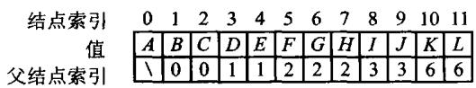
图 6.10 用每个结点的父指针表示树。
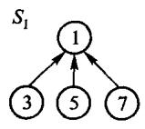
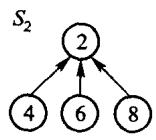
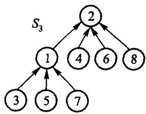
图 6.11 集合的父指针表示与并集。
第一条是【重量权衡合并规则】(weighted union rule)：合并时看两个集合的元素个数， 「令含元素少的子集的树根指向含元素多的子集的根」。原书【代码6.8】的结点里那个 int nCount; //子树元素数目 就是为它准备的。小树挂到大树下，能把整体深度限制在 O(log n)—— 理由是每次合并树高最多加 1，而元素个数至少翻倍，所以任何结点的深度最多增加 log n 次。
注意别和「按秩合并」混了。 按秩比的是树高，按重量比的是元素个数。 两者复杂度同阶，但在同一组等价对上会长出形状不同的树。本书按原书口径用重量， 课程第 6 章习题 8 要求「使用重量权衡合并规则与路径压缩」并画出父指针数组， 换成按秩就对不上答案。并列时本书让值大的根挂到值小的根下—— 原书没规定这一条，这个口径取自那道习题的原话，好让书里的实现能直接用来核对。
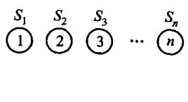
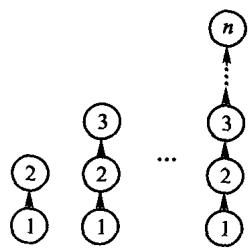
图 6.12 不采用重量权衡时，反复合并可能形成极端退化的树。
第二条是路径压缩：find 在返回根之前，把沿途每个结点的父指针都直接改成根。
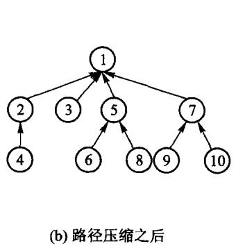
图 6.13 查找根结点时把沿途父指针直接改到根。
/// 【代码6.8】树的父指针表示与 union/find。
///
/// 合并用原书的**重量权衡合并规则**(weighted union rule)：
/// 「令含元素少的子集的树根指向含元素多的子集的根」。原书结点里那个
/// `int nCount; //子树元素数目` 就是为它准备的，这里对应 `size_`。
///
/// **不要换成「按秩合并」**：按秩比的是树高，按重量比的是元素个数，两者
/// 在同一组等价对上会长出**不同形状**的树。原书与课程习题都按重量口径出题
/// （课程第 6 章习题 8 要求「使用重量权衡合并规则与路径压缩」并给出父指针数组），
/// 换成按秩会让读者对不上答案。
class DisjointSet {
public:
explicit DisjointSet(std::size_t count) : parent_(count), size_(count, 1) {
for (std::size_t index = 0; index < count; ++index) {
parent_[index] = index;
}
}
std::size_t find(std::size_t index) {
if (index >= parent_.size()) {
throw std::out_of_range("disjoint-set index");
}
if (parent_[index] != index) {
parent_[index] = find(parent_[index]); // 【算法6.9】路径压缩
}
return parent_[index];
}
bool unite(std::size_t left, std::size_t right) {
left = find(left);
right = find(right);
if (left == right) {
return false; // 已经同类：幂等的可预期失败（D-001 §3c）
}
// 重量权衡：小树挂到大树下。并列时把**值大的根**挂到值小的根下——
// 原书没有规定并列怎么办，这个口径取自课程第 6 章习题 8 的原话
// 「当两棵树规模同样大时，使结点值较大的根结点作为值较小的根结点的子结点」，
// 这样书里的实现能直接用来核对那道题的答案。
if (size_[left] < size_[right] || (size_[left] == size_[right] && left > right)) {
std::swap(left, right);
}
parent_[right] = left;
size_[left] += size_[right];
return true;
}
[[nodiscard]] bool same(std::size_t left, std::size_t right) {
return find(left) == find(right);
}
/// 某个元素所在集合的大小。原书 `nCount` 的对外读法，也让「重量」这件事可测。
[[nodiscard]] std::size_t set_size(std::size_t index) { return size_[find(index)]; }
/// 当前的父指针数组——课程习题要求画出的正是它。
[[nodiscard]] const std::vector<std::size_t>& parents() const noexcept { return parent_; }
private:
std::vector<std::size_t> parent_;
std::vector<std::size_t> size_; // 原书 nCount：子树元素数目
};#6.3 树的顺序存储结构
链式存储每个结点单独分配，指针占空间，也不利于整块读写。如果把结点按某一种周游次序排进数组，再用很少的附加信息记下「谁是下一个兄弟」或「有几个孩子」，就能在连续空间里还原整棵树。原书给了四种，思路都对；本章不另写一套未验证的实现，只把还原办法说清楚。
#6.3.1 带右链的先根次序表示
按先根次序把结点排进数组。每个结点另存一个「右链」下标，指向它的下一个兄弟；没有下一个兄弟就存空。因为先根次序里，一个结点的孩子们正好排在它后面、直到右链所指的位置之前，所以顺着数组往下走、再靠右链跳过整棵子树，就能还原所有父子和兄弟关系。
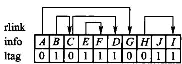
图 6.14 先根序列配合右链下标还原树形。
#6.3.2 带双标记的先根次序表示
右链要用一个整型下标。若改成两个布尔标记——ltag「有没有孩子」、rtag「有没有下一个兄弟」—— 理论上只需两位信息，更省。但普通 C++ bool 成员通常按字节存储，并不保证每位只占 1 bit； 只有显式位压缩或位域实现才可讨论这种空间节省。它是早期教材常见的顺序编码，今天主要用于理解 树的序列化思想，不是通用工程接口。
以原书图6.5(a) 那片森林为例，它的双标记先根次序表示（图6.15）是：
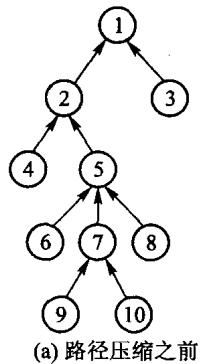
图 6.15 双标记先根次序表示法的原书示例。
先根次序 A B C E F D G H J I
ltag 0 0 0 0 1 1 1 0 1 1 0 = 有孩子
rtag 0 1 0 1 1 1 0 0 1 1 0 = 有下一个兄弟光靠这三行就能把链恢复出来，靠的是先根次序的一条性质：任何结点的子树都紧跟在它后面， 子树排完才轮到它的下一个兄弟。于是「谁是某个结点的右兄弟」要等它整棵子树扫完才知道—— 用一把栈记着：扫到 rtag == 0 的结点就压栈，扫到 ltag == 1 的结点（没有孩子，说明子树到头） 就弹一个出来，把刚建的结点接成它的右兄弟。
【算法6.10】带双标记位先根次序树构造算法。
/// 【算法6.10】带双标记位的先根次序表示 → 「左子/右兄」链式树。
///
/// 顺序表示里每个结点只带两个标志位：`has_child`（原书 ltag == 0）和
/// `has_sibling`（原书 rtag == 0）。光靠先根次序 + 这两位就能把链恢复出来，
/// 靠的是先根次序的一条性质：**任何结点的子树都紧跟在它后面**，
/// 子树排完才轮到它的下一个兄弟。
///
/// 于是「谁是某个结点的右兄弟」这件事要等它整棵子树扫完才知道——用栈记着：
/// 扫到 `has_sibling` 的结点就压栈；扫到没有孩子的结点（子树到头了）就弹一个出来，
/// 把刚建的结点接成它的右兄弟。
struct DualTagNode {
T value;
bool has_child; ///< 原书 ltag == 0
bool has_sibling; ///< 原书 rtag == 0
};
[[nodiscard]] static GeneralTree from_dual_tag(const DualTagNode* nodes, std::size_t count) {
GeneralTree tree;
if (count == 0) {
return tree;
}
if (nodes == nullptr) {
throw std::invalid_argument("from_dual_tag: 结点数组是空指针");
}
// 原书用 `stack<TreeNode<T>*> aStack`，这里用 vector 当栈（见 unit.json 豁免）。
std::vector<Node*> waiting; // 已扫到、还等着接右兄弟的结点
Node* current = new Node(nodes[0].value);
tree.root_ = current;
for (std::size_t i = 0; i + 1 < count; ++i) {
if (nodes[i].has_sibling) {
waiting.push_back(current);
}
Node* fresh = new Node(nodes[i + 1].value);
if (nodes[i].has_child) {
current->child = fresh;
fresh->parent = current;
} else {
// 子树到头了：刚建的结点属于栈顶那个结点的右兄弟。
//
// 原书这里直接 `aStack.top()`，**没有判空**。标志位不自洽的输入
// （例如全是 has_child=false、has_sibling=false）会让它对空栈取顶，
// 那是未定义行为（证据见 legacy.md 缺陷 4）。这里判空并抛异常。
if (waiting.empty()) {
delete fresh;
throw std::invalid_argument("from_dual_tag: 标志位不自洽，右兄弟无处安放");
}
Node* owner = waiting.back();
waiting.pop_back();
owner->sibling = fresh;
fresh->parent = owner->parent; // 兄弟与它共享同一个父结点
}
current = fresh;
}
// 先根次序里最后一个结点必是叶子，**而且没有下一个兄弟**——
// 它的孩子和它的右兄弟都只能排在它后面，而它已经是最后一个了。
// 按标记的定义，末结点必然 `ltag == 1 且 rtag == 1`。
// 循环只走到 count-2，所以末结点的两个标志位都得在这里单独查。
//
// **不自洽就拒绝，不做「尽量还原」**：压栈（有兄弟）与出栈（子树到头）
// 必须一一配对，配不上的序列不对应任何森林的编码。见 legacy.md 缺陷 4。
if (nodes[count - 1].has_child || nodes[count - 1].has_sibling || !waiting.empty()) {
throw std::invalid_argument("from_dual_tag: 标志位不自洽，序列没有正常收尾");
}
return tree;
}【算法6.10结束】
原书这段代码有一处会崩：ltag == 1 分支里直接写 pointer = aStack.top();，没有判空。 标志位不自洽的输入（比如两个结点都声称「没有孩子、也没有下一个兄弟」）会让它对空栈取顶—— 未定义行为。本书判空并抛 std::invalid_argument，另加一条收尾检查：最后一个结点的两个标记 都必须是 1。测试里三种不自洽输入各有一条用例。
为什么是「拒绝」而不是「尽量还原」，值得单独说一句，因为初学者常想「能修就修」：
- 标记的定义就是
ltag == 1表示无孩子、rtag == 1表示无兄弟。先根序列的最后一个结点 后面已经没有结点了，孩子和右兄弟都无处安放，所以它必然是1, 1。 - 扫描过程里，「有兄弟」入栈与「子树到头」出栈是一一配对的。对空栈出栈， 说明这个序列违反了这种配对关系。
也就是说，这三类输入不是合法的边界情况，而是不对应任何森林的编码—— 多半是标记抄错了一位，或者序列被截断了。这时抛异常是在替使用者指出输入有问题; 默默「还原」出一棵树，只会把错误往后传。
#6.3.3 带度数的后根次序表示
按后根次序存放，每个结点记下自己的度数（孩子个数）。后根的特点是：一个结点出现时，它的全部孩子已经作为连续的一段排在它前面。扫描时用栈，每读到一个度数为 d 的结点，就从栈顶弹出 d 棵子树做它的孩子，再把这棵新树压回去。扫完数组，栈里剩下的就是整棵树（或森林）。
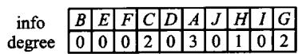
图 6.16 结点度数随后根次序一起保存。
#6.3.4 带双标记的层次次序表示
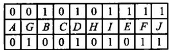
图 6.17 层次次序配合双标记记录孩子和兄弟关系。
按层次周游的次序存放，标记含义与 6.3.2 相同：有没有孩子、有没有下一个兄弟。因为同一层的兄弟本来就排在一起，一层扫完再扫下一层，用队列就能还原。适合需要按层处理的外部存储。
现代视角：紧凑树编码。 如果目标是工程中的紧凑存储或高速导航，通常会考虑 LOUDS、平衡括号（balanced parentheses） 等 succinct tree 编码，而不是直接照搬本节的双标记结构。它们同样把树压成位串， 但会明确规定位级布局、秩/选择（rank/select）操作和随机访问边界。本节的右链、双标记、带度数表示 应视为经典编码对照，用来理解「结构信息如何随周游序列保存」即可。
#6.4 K叉树
有些应用里每个结点的孩子数有固定上限 K，例如三子棋的博弈树、某些 B 树的内存模拟。这时不必走「任意度 + 兄弟链」，可以规定每个结点至多 K 个孩子，叫做 K 叉树。
满 K 叉树、完全 K 叉树的定义与二叉树平行：满 K 叉树的每个结点要么是叶，要么恰好 K 个孩子；完全 K 叉树只有最下两层的度可以小于 K，且最下层靠左对齐。按层从 0 编号时，结点 i 的孩子们是 Ki+1,…,Ki+K，父结点是 ⌊(i−1)/K⌋。K=2 就回到二叉树。
本章主实现仍是任意度的左子 / 右兄，不单独做一份 K 叉数组。需要固定 K、又想顺序存放时，用上面的编号公式即可。
#本章小结
一般树允许任意多个孩子。森林是若干互不相交的树。树和森林与二叉树可以按「长子—左、兄弟—右」一一转换。链式存储里，左子/右兄用两个指针表示任意度；顺序存储则按某种周游次序排进数组，再靠右链、双标记或度数还原树形。并查集用父指针表示集合，路径压缩和重量权衡合并让大量操作接近常数。K 叉树是度有上限的特例。
#习题
#补充证明与算法题（参考课程第 6 章）
- 高度为
h的满k叉树按层编号，推导第l层结点数、结点i的第m个孩子编号及右兄弟条件。 - 用并查集判断变量方程组
a==b、a!=b是否有解，并分别分析无优化、按秩合并和路径压缩的复杂度。 - 给定一棵树的左孩子/右兄弟表示，写出其森林的先根序列和带度数后根序列。
- 画出三棵树组成的森林转换成的二叉树，再转换回去，验证互逆。
- 对树
A(B(E,F),C(G),D(H,I,J))（6.1.1 的括号表示法）写出先根、后根、层次序列。 - 度为 2 的有序树和二叉树差在哪里？举一个「左空右不空」的例子。
- 用带度数的后根次序表示一棵小树，并说明扫描时栈如何弹出孩子。
- 对元素 0..6 依次
unite(0,1)、unite(1,2)、unite(3,4)，画出父指针，再find(0)后画出路径压缩的结果。 - 完全 3 叉树按层编号，写出结点 4 的父和孩子们。
#上机题
- 实现森林与二叉树的互相转换，并用先根序列对拍。
- 用并查集判断无向图是否连通，并统计连通分量个数。
- 比较带路径压缩与不带路径压缩的
find在退化链上的时间。